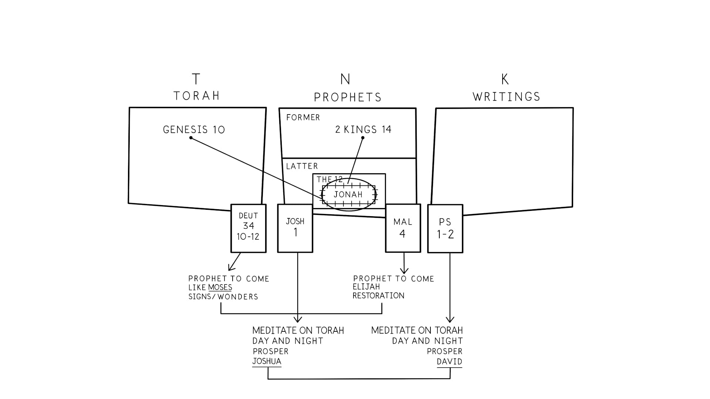

O formato tripartite da Bíblia Hebraica não é simplesmente uma questão de arranjo. Antes, os próprios livros foram desenhados para caber nesta forma particular. Se você olhar para as costuras editoriais das grandes seções (lembre-se de que a tecnologia era rolos de papiro ou couro), encontrará pistas de design intencional no começo e no fim destas seções.The three-part shape of the Hebrew Bible isn't simply a matter of arrangement. Rather, the books themselves have been designed to fit into this particular shape. If you look at the editorial seams of the major sections (remember the technology was papyrus or leather scrolls), you'll find intentional design clues at the beginning and ending of these sections.
O Formato e as Costuras do TaNaK, e Onde Jonas Se Encaixa. Ilustração criada por Tim Mackie para BibleProject Classroom: Jonas (2019).The Shape and Seams of the TaNaK, and Where Jonah Fits In. Illustration created by Tim Mackie for BibleProject Classroom: Jonah (2019).
Deuteronômio 34:10-12: Antecipação de um profeta vindouro semelhante a Moisés que foi prometido mas nunca veio. Josué 1:1-9: O líder designado por Deus, Josué, que guiará o povo à terra prometida, deve meditar na Torá dia e noite para encontrar sucesso.Deuteronomy 34:10-12: Anticipation of a coming Moses-like prophet who was promised but never came. Joshua 1:1-9: God's appointed leader, Joshua, who will lead the people into the promised land, must meditate on the Torah day and night to find success.
Malaquias 4:4-6: Antecipação de um profeta vindouro semelhante a Elias que chamará o povo de volta à Torá e restaurará os corações de Israel antes do Dia do Senhor. Salmos 1-2: O justo que será vindicado no juízo final é aquele que medita na Torá dia e noite para encontrar sucesso (Sl 1). Este justo é o futuro rei messiânico da linhagem de Davi, que é designado por Deus para governar as nações e vencer o mal de uma vez por todas (Sl 2).Malachi 4:4-6: Anticipation of a coming Elijah-like prophet who will call the people back to the Torah and restore the hearts of Israel before the Day of the Lord. Psalms 1-2: The righteous one who will be vindicated in the final judgment is one who meditates on the Torah day and night to find success (Ps. 1). This righteous one is the future messianic king from the line of David, who is appointed by God to rule the nations and overcome evil once and for all (Ps. 2).
A Bíblia Hebraica é literatura de meditação (Js 1, Sl 1) e é desenhada para fomentar:The Hebrew Bible is meditation literature (Josh. 1, Ps. 1) and is designed to foster:

As costuras do TaNaK descrevem o tipo de líder que a humanidade necessita. Como é esta pessoa?The seams of the TaNaK describe the kind of leader humanity needs. What is this person like?